电商物流仓储解决方案分享(信息化方案)
第一章 电子商务物流概况
1.1、电子商务物流概述
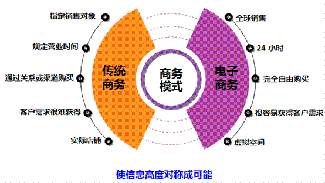
进入21世纪，全球范围内人们对电子商务的认识都发生了质的变化，升华到了“电子商务既是全球经济一体化的产物，也是全球经济一体化发展的重要推动力”的高度，“互联网正在改变一切”已经不再是人们对未来夸张的预言，而是全球商业发展中不可缺少的决定性因素。
随着电子商务务实成分的加强，越来越多的传统企业开始介入电子商务领域。这些地道的“砖头＋水泥”的传统企业不遗余力地在互联网上搭建自己的网上商店，但是对于他们而言在这些极具吸引力的网络前端的背后还存在着极大的挑战。其中作为有形商品网上商务活动基础的物流，不仅已成为网上交易的一个障碍，而且也是其能否顺利进行和发展的一个关键因素。如果没有一个高效、合理、畅通的物流系统，电子商务所具有的优势就难以得到有效的发挥，因此没有一个能与之相适应的物流体系，电子商务将难以得到有效的发展。如何建立一个高效率、低成本运行的物流体系来保证电子商务的通畅发展，已成为人们关注的焦点。与此同时，为顺应电子商务的发展，传统的物流行业在运作方式、技术、管理水平上也发生了巨变。毫无疑问，物流将会影响电子商务的发展，但是电子商务也将改变物流，而物流体系的完善将会进一步推动电子商务的发展，如此的良性循环推动着电子物流（E-Logistics）概念在中国的物流行业中应运而生。
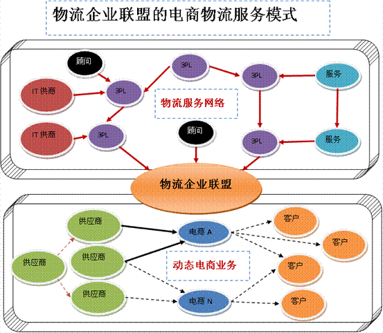
1.2 电商物流的涵义
电子商务物流又称网上物流，就是基于互联网技术，旨在创造性的推动物流行业发展的新商业模式；通过互联网，物流公司能够被更大范围内的货主客户主动找到，能够在全国乃至世界范围内拓展业务；贸易公司和制造企业能够更加快捷的找到性价比最适合的物流公司；电商物流致力把世界范围内最大数量的有物流需求的货主企业和提供物流服务的物流公司都吸引到一起，提供中立、诚信、自由的网上物流交易市场，帮助物流供需双方高效达成交易。目前已经有越来越多的客户通过网上物流交易市场找到了客户，找到了合作伙伴，找到了海外代理。网上物流提供的最大价值，就是更多的机会。
电商物流是指在社会再生产过程中，根据物质资料实体流动的规律，应用管理的基本原理和科学方法，利用电子化的手段，物联网技术、互联网技术来完成物流全过程的协调、控制和管理，对电子商务物流活动进行计划、组织、指挥、协调、控制和决策，使各项物流活动实现最佳协调与配合，以降低物流成本，提高物流效率和经济效益。简言之，电子商务物流管理就是研究并应用电子商务物流活动规律对物流全过程、各环节和各方面的管理。
电商物流的功能十分强大，它能够实现系统之间、企业之间以及资金流、物流、信息流之间的无缝链接，而且这种链接同时还具备预见功能，可以在上下游企业间提供一种透明的可见性功能，帮助企业最大限度地控制和管理库存。同时，由于全面应用了客户关系管理、商业智能、计算机电话集成、地理信息系统、全球定位系统、Internet、无线互联技术等先进的信息技术手段，以及配送优化调度、动态监控、智能交通、仓储优化配置等物流管理技术和物流模式，电商物流提供了一套先进的、集成化的物流管理新理念，从而为企业建立敏捷的供应链系统提供了强大的技术支持。 而电商物流的外包服务则在B to B商与电子物流服务供应商之间，以及B to C业务中的制造商及其业务伙伴之间提供了建设性的桥梁作用。
1.B2C （Business to Cnsumer）企业与消费者之间的电子商务
2.B2B（Business to Business）企业与企业之间的电子商务
3.C2B （Consumer to Business ）消费者与企之间的电子商务
4.C2C （Consumer to Consumer ）消费者与消费者之间的电子商务
5.B2G（Business to Government ）企业与政府之间的电子商务
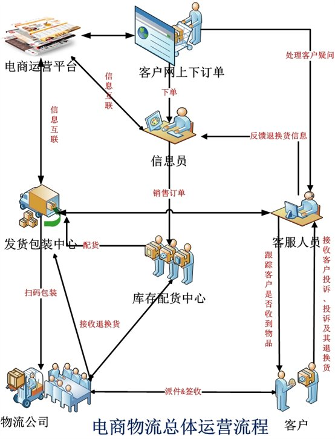
1.3 电商物流管理特点
电子商务物流管理具有综合性、新颖性和智能性的特点。它通过物流战略管理、物流业务管理、物流企业管理、物流经济管理、物流信息管理和物流管理现代化这六方面实现物流管理目标。
1、综合性。从其覆盖的领域上看，它涉及商务、物流、信息和技术等领域的管理；从管理的范围看，它不仅涉及电子商务物流企业，而且包括物流供应链上的各个环节；从管理的方式方法看，它兼容传统的管理方法和通过网络进行的过程管理和虚拟管理。
2、新颖性。电子商务物流体现了新经济的特征，它是以物流信息为其管理的出发点和立足点。电子商务活动本身就是信息高度发达的产物，对信息活动的管理是一项全新的内容，也是对传统管理的挑战和更新，我国对Internet的相关管理手段、制度和方法均处于探索阶段，对如何进行在线管理，也需要物流企业的共同努力。
3、智能性。电子商务物流的实物位移自动化、半自动化程度高，物流供应链过程处于实时监控之中，而物流系统中的传统管理内容，如人事、财务、计划和物流控制等全部都是智能化。故电子商务物流管理的重点是这些自动化、智能化的设计创造过程。一个智能化的电子商务物流管理系统可以模拟现实，可以发出指令、实施决策，根据物流过程的特点采用对应管理手段，真正实现电子商务物流管理柔性化和智能化。
4、信息化。物流信息化是电子商务的必然要求。信息化是一切的基础，没有物流的信息化，任何先进的技术设备都无法在物流领域得以应用，物流信息化表现为物流信息的商品化、物流信息传递的标准化和实时化、物流信息存储的数字化等。因此，条码（Bar Code）技术、数据库（Database）技术等信息技术在我国物流中的普遍应用，彻底改变了物流管理的面貌。
5、自动化。自动化的基础是信息化，自动化的核心是机电一体化，自动化的外在表现是无人化，自动化的效果是省力化，另外还可以扩大物流作业能力、提高劳动生产率、减少物流作业的差错等。物流自动化的设施非常多，如自动分拣系统、自动存取系统等。这些设施在发达国家已普遍用于物流作业流程中。
6、网络化。网络化的基础也是信息化，网络化有两方面的含义，一是物流配送系统的计算机通信网络，包括物流配送中心与供应商、配送中心与顾客联系的计算机网络；二是企业内部网（Intranet）。物流的网络化是物流信息化的必然，是电子商务时代物流活动的主要特征之一，信息技术和通信技术的发展为物流网络化提供了良好的外部环境。
7、柔性化。物流的柔性化是为了实现“以顾客为中心”理念而在生产领域提出的，柔性化的物流是适应生产、流通与消费的需求而发展起来的一种新型物流模型，其实质是将生产、流通进行集成，根据需求端的需求组织生产、安排物流活动。这就要求物流配送中心要根据消费需求“多品种、小批量、多批次、短周期”的特色，灵活组织和实施物流作业。
1. 信息标准化：在政府主导下，大力推进物流信息标准化建设，如电子数据交换EDI标准建设，从而实现物流信息资源共享与整合。
2. 创新机制：强化物流信息化建设意识，推进电商和物流企业的体制、技术、管理创新。
3. 组织精细化：引进吸收发达国家先进的管理经验，合理安排物流中间环节，建立扁平高效的组织结构。
4. 人才培养：重视电子商务环境下物流信息化人才的培养，促进我国电商物流信息化的进程。
5. 流程优化：加强电子商务物流流程的研究，推进电商和物流公司的业务流程再造。不要盲目地在现有流程的基础上推进物流信息化，否则无法实现高效电商物流系统。流程再造就是通过系统方法来清除无效的物流流程环节，以提高物流系统效率，减少浪费。
6. 新技术应用：要在现有的科技水平基础上更好地应用计算机、网络和数字技术，将现代通讯技术与计算机数据处理技术相连接，最大限度地发挥电子商务物流信息化的综合优势。
7. 发展第四方物流：将云计算技术超强的运算能力、管理能力、智能决策能力和跟进服务能力应用于物流信息化建设。建立区域和全国物流公共信息平台，发展第四方物流。
8. 可视化管理：推进可视化物流管控平台在电商物流业务中的运用，使物流作业透明、可控、可追溯。
1.4电商物流供应链规划流程
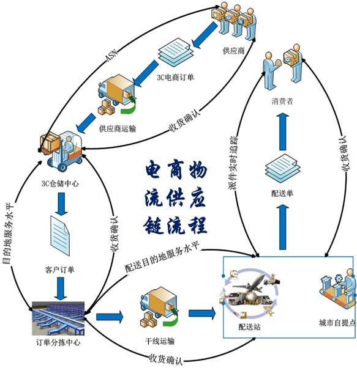
1.5、电商物流平台功能架构
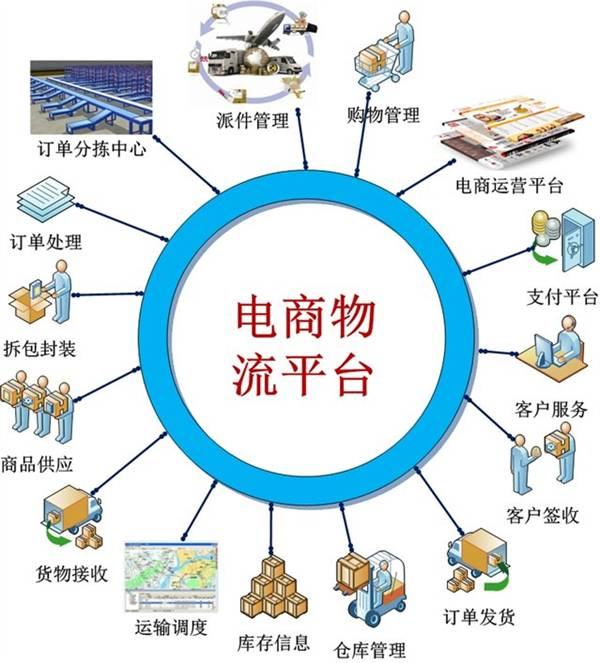
第二章 电子商务物流解决方案
2.2、速威电商物流配送平台
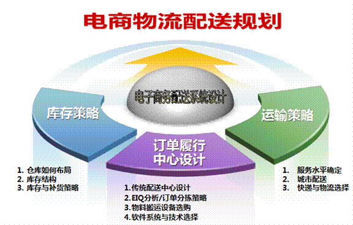
2.2.1电商物流配送平台设计
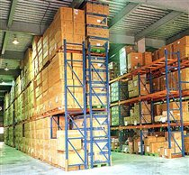
2.2.2 电商物流配送平台优势
相对于传统的物流配送模式而言，此电子商务物流配送平台模式具有以下优势：
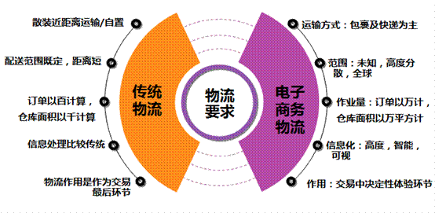
2.2.1.1货物高效配送
在传统的物流配送企业内，为了实现对众多客户大量资源的合理配送，需要大面积的仓库来用于存货，并且由于空间的限制，存货的数量和种类受到了很大的限制。而在电子商务系统中，配送体系的信息化集成可以使虚拟企业将散置在各地分属不同所有者的仓库通过网络系统连接起来，使之成为“集成仓库”，在统一调配和协调管理之下，服务半径和货物集散空间都放大了。这样情况下，货物配置的速度、规模和效率都大大提高，使得货物的高效配送得以实现。
2.2.1.2货物配送适时控制
传统的物流配送过程是由多个业务流程组成的，各个业务流程之间依靠人来衔接和协调，这就难免受到人为因素的影响，问题的发现和故障的处理都会存在时滞现象。而电子商务物流配送模式借助于网络系统可以实现配送过程的适时监控和适时决策，配送信息的处理、货物流转的状态、问题环节的查找、指令下达的速度等都是传统的物流配送无法比拟的，配送系统的自动化程序化处理、配送过程的动态化控制、指令的瞬间到达都使得配送的适时控制得以实现。
2.2.1.3操作流程简化智能化
传统物流配送的整个环节由于涉及主体的众多及关系处理的人工化，所以极为烦琐。而在电子商务物流配送模式下，物流配送中心可以使这些过程借助网络实现简单化和智能化。比如，计算机系统管理可以使整个物流配送管理过程变得简单和易于操作；网络平台上的营业推广可以使用户购物和交易过程变得效率更高、费用更低；物流信息的易得性和有效传播使得用户找寻和决策的速度加快、过程简化。很多过去需要较多人工处理、耗费较多时间的活动都因为网络系统的智能化而得以简化，这种简化使得物流配送工作的效率大大提高。
2.3 订单履行中心
订单履行中心主要用于客户订单的接受、处理优化、物品拣选、订单整合和包装的过程。它包括对物品的物理操作和相应的信息处理。
订单履行是实现配送中心功能的关键环节，它决定了订单执行的效率、准确性并负责反馈库存可得性，最终决定了客户的满意度，是配送企业的核心竞争力之所在。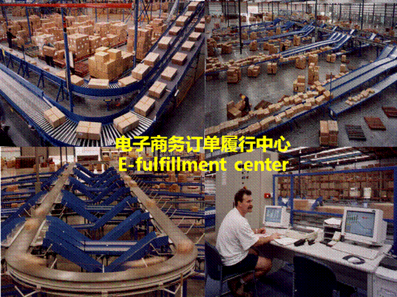
2.3.1 订单履行中心流程
订单接受、订单处理、订单完成、商品运输、订货到达
2.3.2订单履行中心功能特点
2.4 订单区域配送中心
2.4.1 订单配送中心设计策略
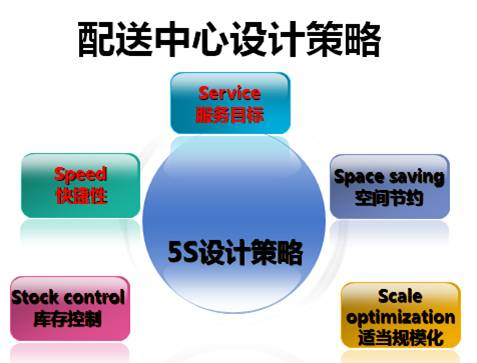
2.4.2 区域配送中心设计
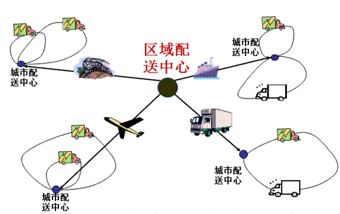
2.4.2 快件分拣中心
快件分拣中心目的在于维护总部及分拣中心及站点派送员的共同利益，缩短快件派送时效，强化快件接收、分拣、封发、中转管理，明确分检中心各部门员工的岗位责任，提高分拣时效及服务质量，确保快件中转运输安全。
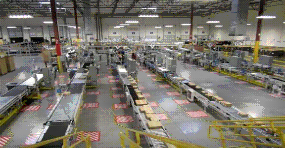
2.5 智能综合分拣区2.5.1 电子标签辅助订单分拣
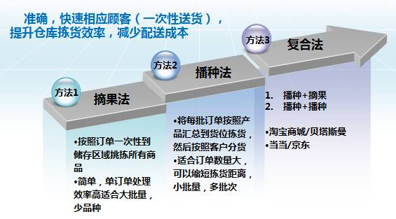
2.5.1.1摘果式电子标签分拣系统
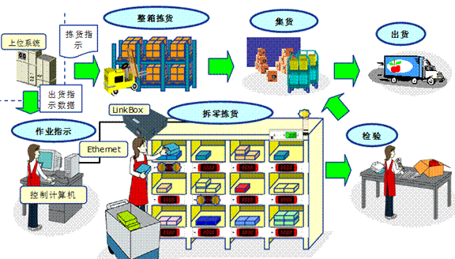
2.5.1.2播种式电子标签分拣系统
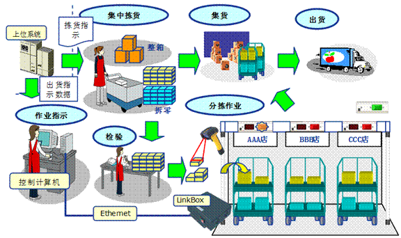
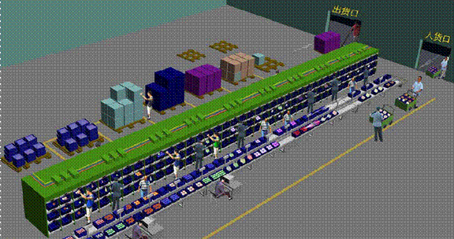
2.5.1.3 摘果式分拣现场
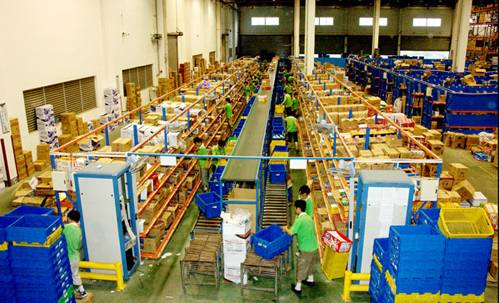
2.5.1.4 播种式式分拣现场
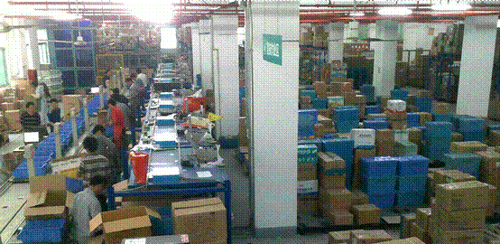
2.5.2 手工订单分拣
手工纸面单据作为最原始的一种拣货方法广泛应用于物流仓库的拣货流程。它的特点是流程简单，所需设备单一，容易被员工接受。根据作业方式可以分为拣货单和分货单，拣货单一般照客户进行打印，一张拣货单是一个客户的；一张拣货单中包含多个商品明细，并且按照货位排序打印，一个货位放置一种货品，拣货员工按照货位顺序从对应的货位取得相应数量的货品，并在拣货单据上使用笔进行标记；直到这张单据上的所有纪录标记完毕。
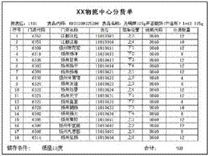
分货单一般按照先商品后客户进行打印，一张分货单一般包含多个货品，每个货品下包含多个客户，打印时按照客户的相对集货位顺序进行排序。分货时分货员先取一个货品放在拖车上，按照客户顺序将商品逐个放到对应的货位上，并在分货单据上使用笔进行标记，直到这张单据上的所有纪录标记完毕。
手工纸面单据最大的缺点是拣货时双手不能得到完全解放，拣货差错率较高，难以统计拣货人员工作量。最原始的拣货方法并不意味着低效率；如果仓库场地能够做到有效的规划，即使使用这种最原始拣货方法，也会有较高的效率。这些因素中尤其重要的一点是拣货动线规划。而且这种方法具有投资低的优势，特别适合规模较小、业务较少的物流仓库作业。
2.5.3RFID智能出库分拣
在成品包装车间，工人先将RFID电子标签贴在产品上，成批装箱后贴上箱标，需打托盘的也可在打完托盘后贴上托盘标；一般贴标方式有：
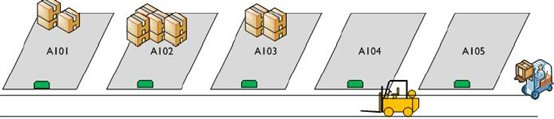
包装好的产品由装卸工具经由RFID阅读器与天线组成的通道进行入库，RFID设备自动获取入库数量并记录于系统，如贴有托盘标的，每托盘货物信息通过进货口读写器写入托盘标，同时形成订单数据关联，然后通过计算机仓储管理信息系统运算出库位（或人工在一开始对该批入库指定库位）。
2.5.3.1订单批量快速分拣
RFID智能仓库技术特点在于，通过射频识别技术自动识别分拣的货物、实时显示仓库库存、货物进出全自动更新并实时显示在大屏幕上，分拣无需人为扫描条码
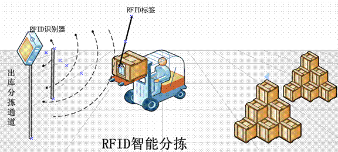
2.5.3.2RFID智能分拣效益
2.5.4移动台车拣货
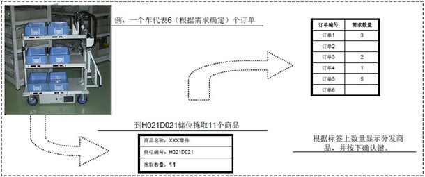
2.5.5RF手持出库拣货
无线终端拣选建立在条形码扫描技术以及无线通信技术的基础上，它具有快速读取数据和采集信息的功能。在拣选系统中，借助手持式或固定式无线数据采集终端（RF Terminal），操作员和系统可以通过识读流转单上的流水号条码、货品上的条形码、货位条码等，快速获得相应信息。勿庸置疑，条码扫描极大地提高了拣选效率及准确性，一般而言，条码扫描拣选的准确率可达99%以上。
2.5.6语音拣货
它是一个集多样的方案 (系统应用, 语音技术, 可携带的硬件, 管理运用的工具) 提供在仓库或配送中心使用应用系统。把作业指令翻译成语音指令, 传送给指定位置的工作人员,工作人员通过说出SR系列语音识别耳机内的数字识别号来确认位置
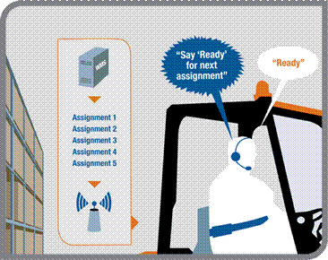
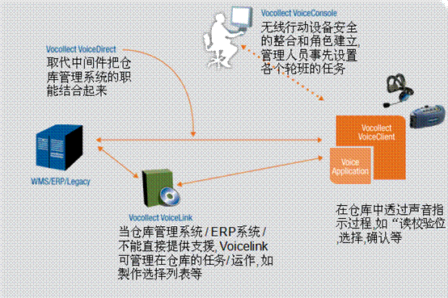
该技术的使用已经证明可将标准拣选速率提高高达35%，而准确率则达99.9%，甚至更高。语音辅助拣选系统是涉及大量品项时一个经济的选择。
由于操作免手控、不用眼，工人们可听取指令然后执行任务，而无需观看手持式计算机的屏幕或在一堆拣选标签中分拣。语音终端将与主计算机或仓库管理系统（WMS）无缝并实时交互，通过声音命令提示操作员完成任务，然后等待语音确认或请求。
语音辅助拣选还可完全集成至区域选路系统用于货物拣选。货物拣选应用可将多个订单放在一起批处理，从而在拣选模式中对小订单进行更高效的拣选。或者，可将多个订单批处理到一个拣选小车，以处理仓库内流动最缓慢的区域。
2.5.7S-ID定位拣货
SID是以非接触方式实时测定建筑物内的移动物体位置的系统。利用红外线以及超声波技术，系统可以掌握高精度的三维空间位置信息。SID名称的含义是：利用超声波（Super Sonic）来识别（ID）物体的三维空间位置。
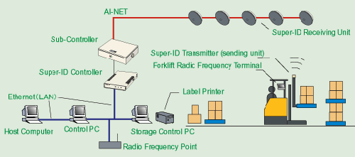
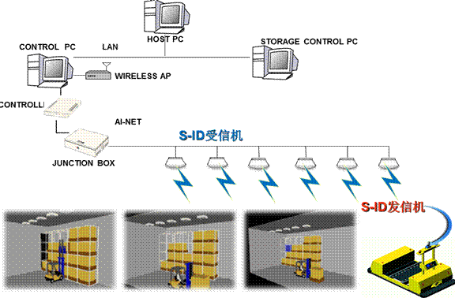
2.5.7.1S-ID定位拣货系统特点
通过观测物流中心的作业动线，改善设备的位置和布局，提高作业效率。
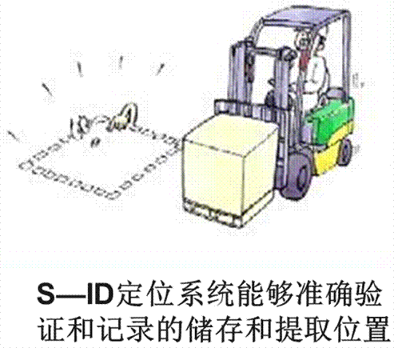
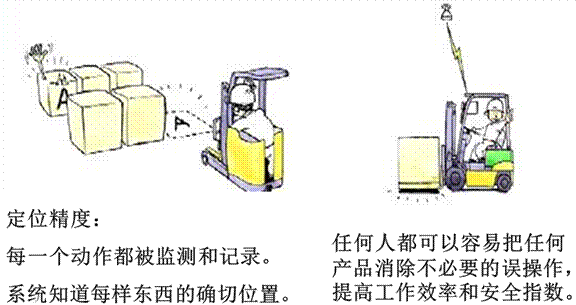
2.5.8AS/RS自动化立体库拣货
针对托盘AS/RS设备的最新控制系统技术使其变得非常高效且准确。每台设备均设计可实现无噪音运行与可靠性。
与基于叉车作业的人工库相比，高效能托盘堆垛机（RapidStore UL）能大幅加快出入库循环作业的速度。堆垛机（SRM）不仅比窄巷道叉车运行更快，还能在比托盘仅宽200毫米的巷道内完全有能力处理重达1,800千克的货物，最高处理高度可达46米，根据货物重量、系统高度和巷道长度的不同可达每小时60次双循环作业。
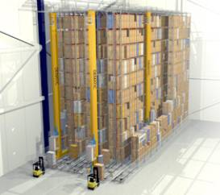
2.6、运输配送管理中心2.6.1线路规划
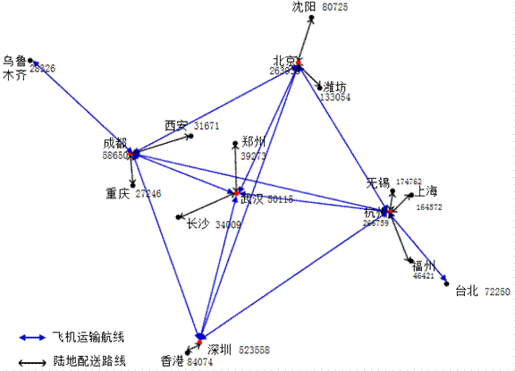
2.6.2GPS运输配送实时监控
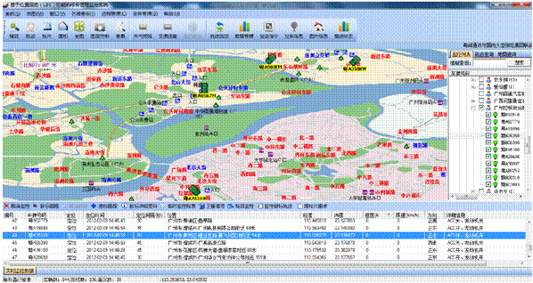
GPS监控自主研发GIS地图引擎
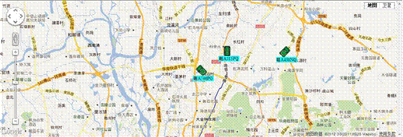
GPS监控（网络地图）
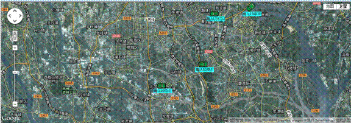
GPS监控（卫星地图）
2.6.3GPS轨迹回放
用户可以指定任意目标进行任意时段的轨迹查询，查询出来的历史轨迹可以通过地图和数据进行显示和回放，非常感性的体现出目标的历史动态
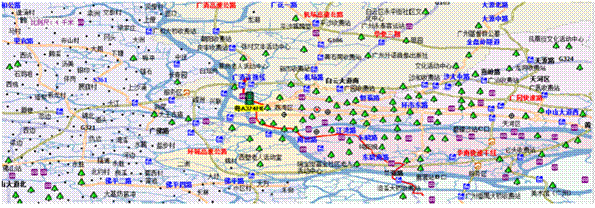
列表显示目标历史停止的地点。
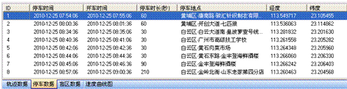
2.6.4运输配送报警机制
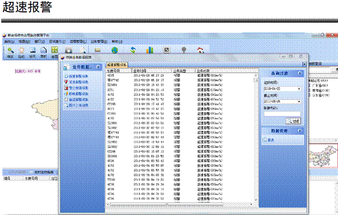
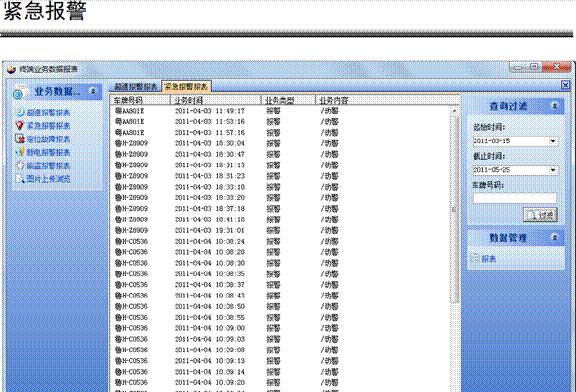
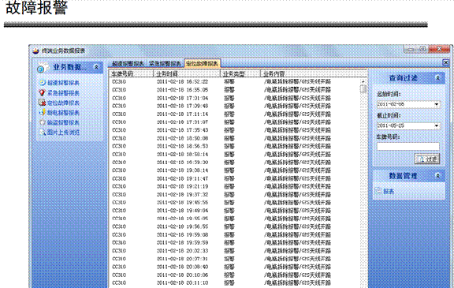
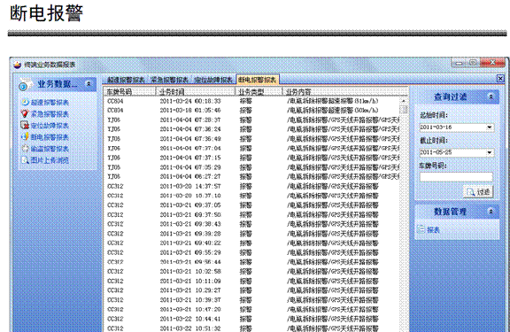
2.6.5运输配送报表管理
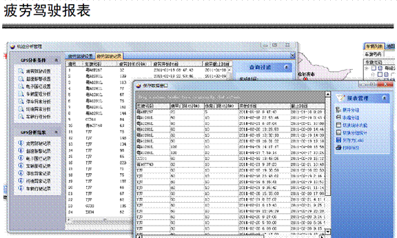
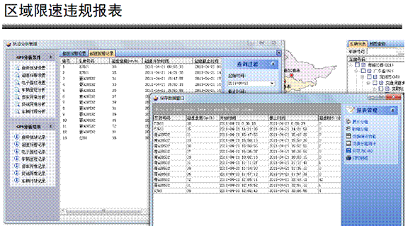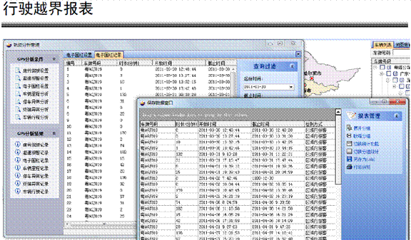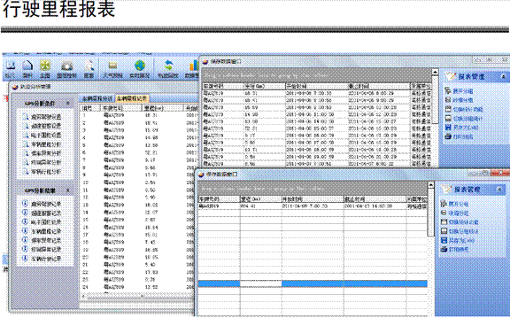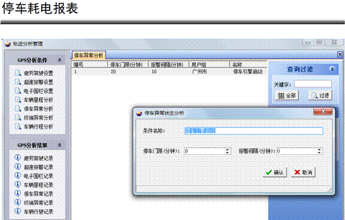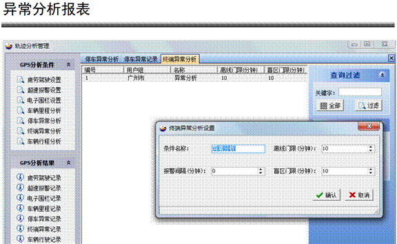
2.7、RFID智能仓库区
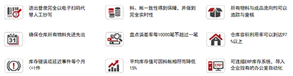
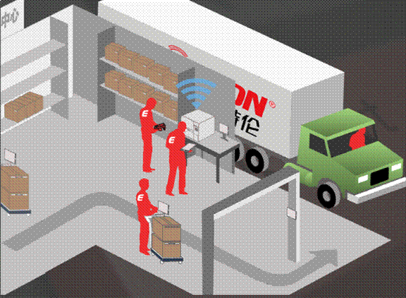
2.7.1 RFID智能仓库优势2.7.1.1更好更精确的位置管理优势
在物流中位置管理是一个非常重要的管理，无论是静态的还是动态的位置。通过RFID技术，可对货物的静态位置（仓位、物流区域等）和动态位置（进出移、配等）进行很好的精确管理。在标签中就可以对货物移动、仓位变化记录轨迹，后台系统支持不是必须。
2.7.1.2更强的库存控制优势
由于RFID标签存储信息量的丰富性及识别的速度、方便性，通过与信息系统及RFID手持终端配合，可以在入库上架环节快速自动完成库存数量、仓位更新，避免人工错误；出货时可以判别是否取货、是否拿错货；在出货验收过程中根据系统指示（如先入先出）保证在合适仓位取出合适的货物，可以极大地提高拣选正确率，同时由于RFID阅读器可以一次读取多个标签，所以也可以加快出货验收速度；特别可以用在移库移仓、盘点等操作，解决盘点周期长，盘点效率低的问题，可以大大降低随时盘点的难度，更重要的是由于标签实时记录入出变化，在盘点时不需要停工作业。尤其能在平时操作中就可以避免错误，保证操作的正确性。
2.7.1.3精细化管理，更高的管理运行效率
通过应用RFID方便快速定位查找的优势，仓储区内商品可以实现自由放置，提高仓储区的空间利用率；如果用在货架上，则可以实时保证货架物品的入出正确率；可现场提供有关库存情况的详细的、准确的、丰富的库存信息、入出履历，以利于采购跟踪、销售跟踪；识别的主动性使得它可以帮助企业有效地管理供应链和产品目录，防止产品被偷盗，在很大程度上提高了企业的运营效率。在仓库里应用RFID，可使仓储管理、存货管理、货位指派监督、供应商存货管理、贵重商品管理等实现一定的自动化，减低对人的依赖性。
2.7.1.4创新的仓库应用，对目前的业务流程及人工操作作了极大的改进
在整包装入出货操作中采用智能货架，当货物上架及离架时自动报告入出货仓位、货物、数量等信息；同时可以采用库内智能运输单元，当货物从货架上放入该运输单元中，则直接识别该出库货物，同时允许在该运输单元的设备上手工输入数量，完成自动出货；
2.7.2 RFID智能仓库效益
智能仓储技术是一种具有前瞻性的管理模式，通过物联网技术把仓库管理信息化、明朗化，从而节省劳动力、提高仓库管控效率、节约成本提高行业竞争力。
2.7.3RFID智能仓库功能模块
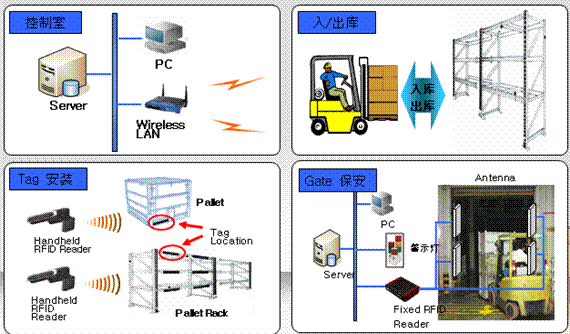
2.7.3.1RFID收货管理
进行原料的收货管理，制作RFID电子标签进行关联到该原料上面；
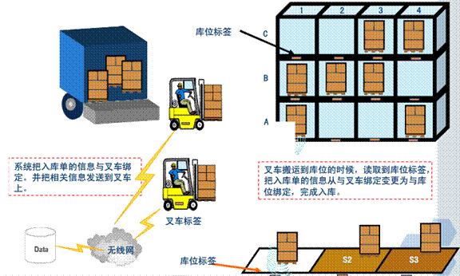
2.7.3.2RFID拣货管理
根据用户的需求采用RFID电子标签来针对出库托盘进行管理。客户在开出了销售出库单之后，对该销售出库单进行预先备货，在发货托盘贴一个RFID标签，跟销售出库单关联，并且去扫描拣货产品条码，进行比对是否是销售出库单要实际出库的产品。将产品拿出放到新贴RFID电子标签的托盘上面，扫描所有的需要出库的产品之后，在感应托盘标签，系统会自动关联一个相当于出库单的托盘。关联之后，可以在电脑端进行，输入托盘的RFID标签内容，查询各个托盘的产品情况。同时也能通过手持RFID扫描枪靠近托盘感应托盘上面的产品信息显示到手持终端上面。当物流公司的汽车过来，直接用RFID读取器扫描生产任务单，拿着RFID读取器到备货区去找相应的备货托盘，当RFID读取器感应到出库托盘的时候就会发出提示音，当越来越靠近托盘标签的是时候，发出的提示音就更加强烈，这样以便于仓管出货的效率。
2.7.3.3RFID入库管理
在成品包装车间，工人先将RFID电子标签贴在产品上，成批装箱后贴上箱标，需打托盘的也可在打完托盘后贴上托盘标；一般贴标方式有：
包装好的产品由装卸工具经由RFID阅读器与天线组成的通道进行入库，RFID设备自动获取入库数量并记录于系统，如贴有托盘标的，每托盘货物信息通过进货口读写器写入托盘标，同时形成订单数据关联，然后通过计算机仓储管理信息系统运算出库位（或人工在一开始对该批入库指定库位）。
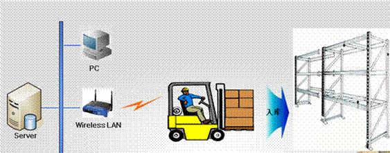
2.7.3.4RFID出库管理
RFID阅读器和电子标签优化了出库的速度，根据配货的托盘，当叉车上面的RFID阅读器感应到相应的托盘标签之后，会进行提示信息，仓库人员可以根据声音的不同进行分辨所靠近的托盘货物是否对应相应的出库单。每一个库位也是一个RFID标签，这样的话有利于仓库产品的管理，在盘点和整理货物都可以使用托盘和库位为一个单位进行，减少了平时的工作量。
2.7.3.5RFID盘点管理
先建立盘点方案，系统就会将目前的账目库存自动统计到盘点方案所生成的盘点单里面，之后就交给仓库管理人员去进行盘点。当使用手持终端进行盘点的时候，先登录选取盘点方案，也就是表面目前你正在对那个盘点方案进行盘点，然后直接去感应RFID的仓位信息，当感应到仓位信息之后，手持机就会将该仓位的所有的产品显示出来，此时你去点货，直接在该页面修改实际的你点到的产品的数量，如果没有的产品进行扫描条码进行添加进去，这样依次盘点完成之后，该盘点方案的盘点单就有实际的盘点数量了。根据条件查询出相应的盘点单进行生成盘盈、盘亏单据来调整账目库存跟实际的库存是一致的。
2.7.3.6RFID追溯管理
RFID条码质量追溯系统在生产阶段，生产者把产品的名称、规格、型号、批次、使用原料、生产者信息及其他必要的内容存储在RFID标签中，利用RFID标签对初始产品的信息和生产过程进行记录；在 加工阶段，利用RFID条码质量追溯系统RFID标签中的信息对产品进行分拣，符合加工条件的产品才能允许进入下一个加工环节。对进入加工环节的产 品，利用RFID标签中记录的信息，对不同的产品进行有针对性的处理，以保证产品质量；加工完成后，由加工者把加工者信息、加工方法、加工日期、产品等级、保质期、存储条件等内容添加到RFID标签中；这样的话就能对产品进行追溯管理。能查询到该产品的所有信息。
2.7.3.7RFID防伪管理
因为RFID电子标签具备加密区，所以在对于防止假冒产品有很强的防御作用。当对于本公司的产品的标签进行采用RFID电子标签，设置加密区，在使用读取该电子标签的时候需要先读取加密区域的信息，才能再次读取出标签的信息，这样的话只能使用本公司的配备的具有解密密钥的RFID读取手持机，才能正确的读取出相应的正确的信息，使用其他的RFID手持终端是无法读取产品信息的，这样的话就起到了防止假冒产品的有效解决办法。
2.7.3.8RFID智能门禁
物联网智能门禁系统、RFID数据识别器、电子看板等设备组成。通过RFID数据识别器获取到贴有RFID标签的物，或者佩戴有RFID标签的人员，实时把数据传输到智能门禁系统服务器进行信息验证匹配，传输到电子看板进行信息显示。如果获取的数据不合法或者非授权的，系统会执行自动报警提示。智能门禁通过身份识别验证来对人员的进出实施放行、拒绝、记录等操作的智能化管理系统,作为大门门禁控制、智能楼宇系统、高安全性出入口管理等场所的安全出入控制，其目的是为了有效的控制人员、设备、商品的出入，并且记录所有进出的详细情况，实现对出入口的安全管理。